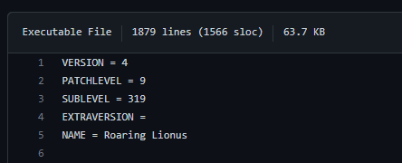
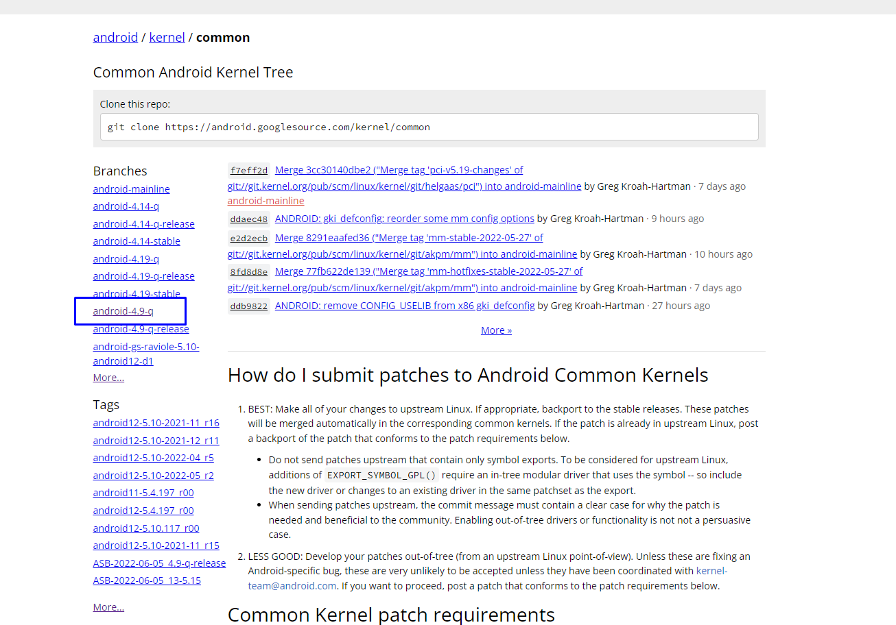
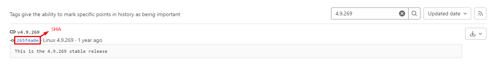

Параграф 5: Обновление и сборка ядра
Для обновления ядра, вам нужен хотя бы средний уровень знаний того, как же работает ядро (см. что такое ядро) и в целом Android, а так же умение пользоваться git (см. ходовые команды git).
Обновление
Подготовка
Давайте, для начала узнаем какие стабильные версии ядра Android на данный момент (2022 г.) активно обновляются. Вот список для наглядности: 4.9, 4.14, 4.19, 5.4, 5.10, 5.15. Должен сразу предупредить, что обновить ядро, предположим, с 4.9 до 4.19 без перебазирования невозможно, более того, обычно производитель делает специфические драйвера устройства только для одной версии и не обновляет дальше, а так же само ядро может не поддерживать ваш чипсет и без углублённых знаний в ядре обновить драйвера у вас не получится. Поэтому, зачастую, маинтейнеры обновляют sublevel ядра, это мы и будем делать ниже. Чтобы узнать его, заходим в исходник ядра, которое хотим обновить, в корне находим и открываем файлик Makefile, в самом верху (обычно) видим такую картину:

Либо просто заходим на своём смартфоне в Настройки > О Телефоне (только если на смартфоне установлено то же ядро, исходники которого вы собираететсь обновить)
Узнали. После этого нужно найти репозиторий общего (common) ядра, с которого и будем обновлять, обычно используют https://android.googlesource.com/kernel/common/, но можно и другие зеркала. Например https://git.codelinaro.org/clo/la/kernel/msm (только для Qualcomm).
Смотрим в список бранчей и выбираем со своей версией ядра:

После чего смотрим на название последнего коммита, должно быть что-то по типу Merge <версия ядра>, если sublevel выше, чем в ваших в исходниках, тогда можно продолжать. Если же нет, то поздравляю, у вас последняя версия
Скачиваем репозитории
Для примера, я буду использовать 4.9.268 ядро от Lenovo Z5s (jd2019) и обновлю его до 4.9.319. Также, для удобства, рекомендую использовать GitHub Desktop, хоть в нём и не присутствует весь функционал.
-
Для начала нам нужно склонировать исходники своего ядра (описывать как это делать я думаю не нужно), после добавляем репозиторий в GitHub Desktop (опять же, это не обязательно, все действия можно выполнить только через git).
-
Затем, открываем терминал в папке с исходниками вашего ядра и добавляем наш удаленный репозиторий общего ядра командой:
git remote add common urlcommon- название, можете использовать любое другоеurl- ссылка на репозиторий -
Теперь фетчим добавленный репозиторий:
git fetch commonЕсли вам лень или не позволяет интернет скачать весь репозиторий, можете в конце команды добавить название бранча, тогда скачивать будет только его.
[картинка с списком бранчей]
Мержим изменения
Обновлять ядро лучше всего по одному саблевелу - так больший шанс понять в какой версии и коммите проблема, если у вас будут ошибки при сборке, либо в самой системе, я же рисковый и делал сразу по пять (о чём потом пожалел).
-
Находим нужную нам версию с помощью поиска в разделе тэгов: 
-
Копируем SHA и мержим этот коммит в нашем бранче:
git merge shaЕсли никаких конфликтов нет, то можете замержить ещё пару. Но опять же, вы не будете знать на какой версии у вас всё поломалось, так что лучше мержить по одному-два и собирать, если ядро собралось и система запустилась, то переходим к следующим саблевелам.
Фиксим конфликты
Здесь всё довольно муторно. Лично я делаю по такой схеме: если появляются конфликты, то открываю GitHub Desktop, с помощью него намного легче найти их, т.к. они все сразу отображаются вместе с поломанными строками. Если конфликт простой, то фикшу вручную, если же ничего не понятно, то захожу в common репо, открываю просмотр файлов во временной точке нужного тэга и ищу этот конфликтный файл там, открываю историю коммитов для него и смотрю как делали там и просто повторяю все изменения в свой файл. Конфликтных файлов может быть очень много, так что наберитесь терпения и не спешите, т.к. одна лишняя строчка или ошибка в тексте и ядро у вас не соберётся, либо не запустится.
Сборка ядра
Из исходников прошивки
Этот способ для тех, кто уже знает как собирать прошивки и т.п. Проходим по обычному сценарию подготовки к сборке прошивки, только вместо команды запуска сборки прошивки (mka bacon, make bacon и др.), пишем mka bootimage.
Из папки ядра
-
Скачайте исходный код ядра Android и перейдите в папку с ним с помощью команды:
git clone <url> kernelcd kernel -
Убедитесь, что у вас установлены необходимые инструменты для сборки ядра, такие как компилятор GCC/Clang, библиотека make, инструменты для работы с архивами (tar, gzip и т.д.) и другие.
-
Выберите конфигурацию ядра, которую хотите собрать:
make defconfigЭта команда создаст файл конфигурации ядра с набором опций по умолчанию. Конечно же, выбираете свой defconfig
make menuconfigЭта команда откроет интерактивное меню, где вы сможете выбрать нужные опции ядра с помощью стрелочек.
-
Запустите сборку ядра с помощью команды:
make -jNГде N - это количество ядер вашего процессора. Это позволит ускорить сборку, так как она будет выполняться параллельно на разных ядрах.
-
После успешной сборки ядро будет доступно в каталоге
arch/architecture/boot/(где architecture - это архитектура вашего устройства, например, x86 или arm).